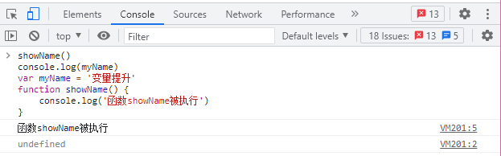

前言
我们知道，javascript是按照顺序执行的。但是很多时候，有些代码的表现形式看起来并不是按顺序执行，经常让人匪夷所思。今天我们就从执行上下文来理解一下javascript的这些“怪异表现”。
我们先来看一段代码。
|
|
如果顺着“Javascript是按照顺序执行的”思路来想，那么我们猜测执行结果应该是：
- 第一行报错，因为showName函数还没有定义；
- 第二行报错，因为myname变量还没有被定义；
然而实际结果却如下图

如果把第三行代码删除，则执行会报错。
通过以上代码，可以得出结论：
- 执行过程中，若使用了未声明的变量，那么Javascript执行会报错。
- 在一个变量定义之前使用它，不会报错，但是该变量的值会为undefined，而不是定义时的值。
- 在一个函数定义之前使用它，不会报错，且函数能正确执行。
为什么会这样呢？此处就要引出变量提升的概念了。
所谓的变量提升，是指在Javascript代码执行过程中，Javascript引擎把变量的声明部分和函数的声明部分提升到了代码“开头”的行为。变量被提升后，会给变量设置默认值，这个默认值就是我们熟悉的undefined。
这就是我们可以在定义之前使用变量或者函数的原因————函数和变量在执行之前都提升到了代码开头。
了解了变量提升，那问题来了：Javascript为什么要设计变量提升呢？
答案是因为Javascript代码在执行之前需要先被Javascript引擎编译。编译过后，会生成执行上下文（即Javascript执行一段代码时的运行环境）和可执行代码。
也是由于这个原因，一段代码中如果定义了两个相同名字的函数，那么最终生效的是最后一个函数。
总结：
Javascript代码在执行过程中，需要先做变量提升。之所以需要变量提升，是因为Javascript代码在执行之前需要先编译。
在编译阶段，变量和函数会被放到变量环境中，变量的默认值会被设为undefined；在代码执行阶段，Javascript引擎会从变量中去查找自定义的变量和函数。
如果在编译阶段，存在两个相同的函数，那么最终存在变量环境中的是最后定义的那个，这是因为后定义的会覆盖掉之前定义的。
变量提升也会带来一些问题，比如变量覆盖，变量污染（块级作用域外部可以访问到作用域内部，从而覆盖或者污染变量）。针对这个问题，es6引入了let、const关键字来解决。